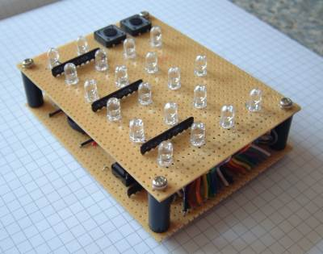
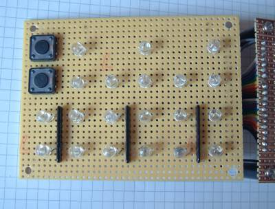
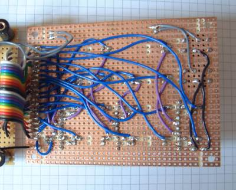
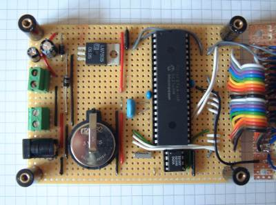
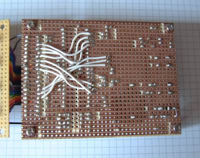

A while back I was browsing through the ThinkGeek site when I came across a 'LED Binary Clock' which displayed the time using six columns of LEDs showing the hours, minutes and seconds in binary. Seconds later the impulse to design and build one from scratch hit.

My design is pretty simple as can be seen in the schematic. The time is kept by a Dallas DS1307 RTC clock connected to a MicroChip PIC 16F874A using an I2C bus. The LEDs for the various components of the display are driven directly from the PIC using pins on the various ports.
The firmware reads the RTC chip on startup to get the current time and from then on uses an interrupt generated by a 1Hz square ware output from the RTC to update the time by a second. The push buttons allow you to increment the hours and minutes value and write back the changed value to the RTC when released.
The selection of pins on port B is arranged so that wake-up-sleep will occur when a button is pressed or the square wave signal interrupts. Pins 6 & 7 are kept free for the Microchip ICD2 debugger.
The clock is constructed from two strip boards separated by plastic spacers. A short piece of 20 way ribbon cable and a few additional wires connect the upper and lower boards.
|  | Only the push buttons, resistor networks and LEDs are on the top surface. |
|  | All the wiring on the upper LED board is on the underside. |
The lower card contains the power socket, +5V regulator, microcontroller and RTC chip. When I built this I was experimenting with solar panels and rechargeable batteries as an alternative to a mains supply which is why this board has an additional diode and two (green) connectors when compared to the schematic.
|  | The brains (and brawn) behind the circuit. |
|  | Some of the LED connections are wired on the underside to keep the spaghetti under control. |
If you click here you can see a short Window Media Video (WMV) of the clock in operation.
The following ZIP contains all the PIC assembler need to program the clock as a single MPASM project. MPASM tends to put absolute paths in its internal files so you may need to rebuild the project before it will assemble.
Here are some links to other sites that have details on binary clocks you might like to look at.
A hobby builder in Brazil called Cesar has built his own version of ;this design. In the process we discovered a small error in the DS1307 initialisation code (one instruction!) which has been updated in the source zip.
| << Back |
|
Contents | Next >> |
© Copyright 2009 Andrew John Jacobs. All rights reserved.
All trademarks and service marks are the properties of their respective owners.